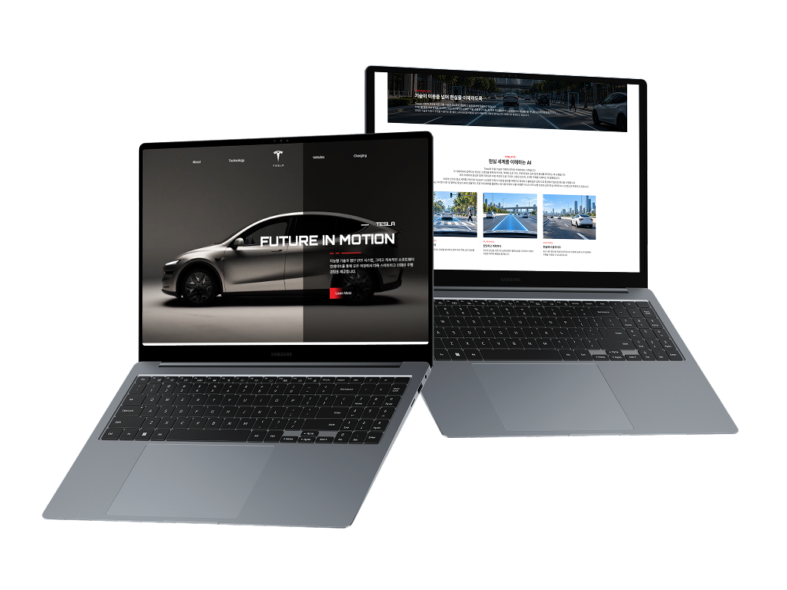
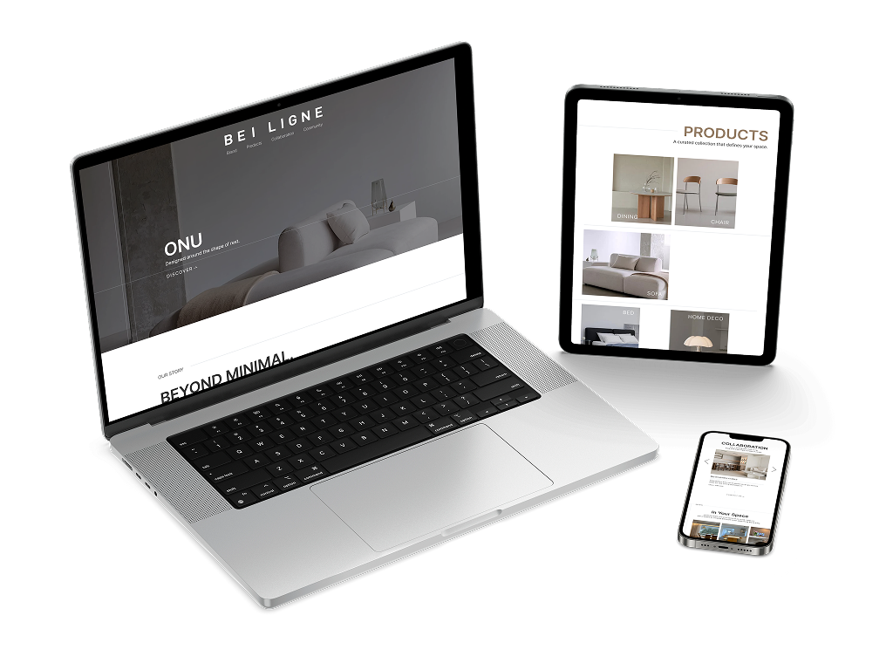
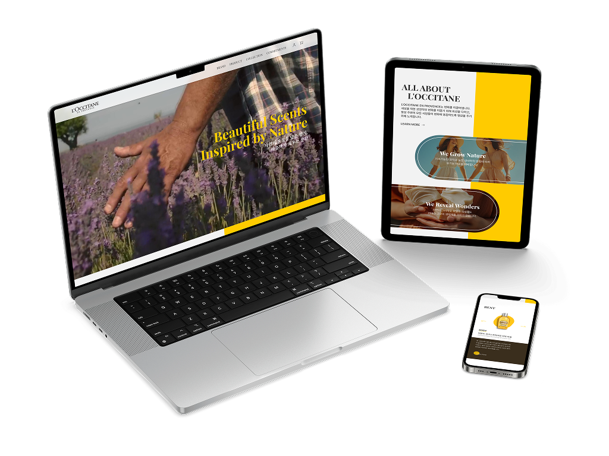
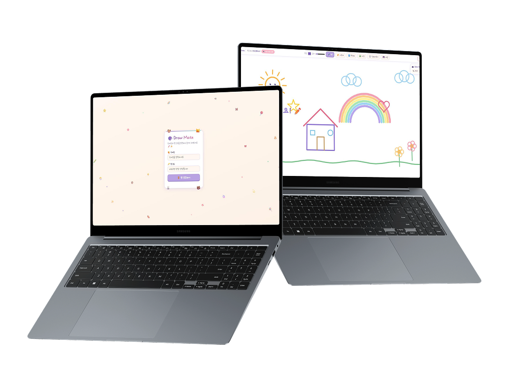
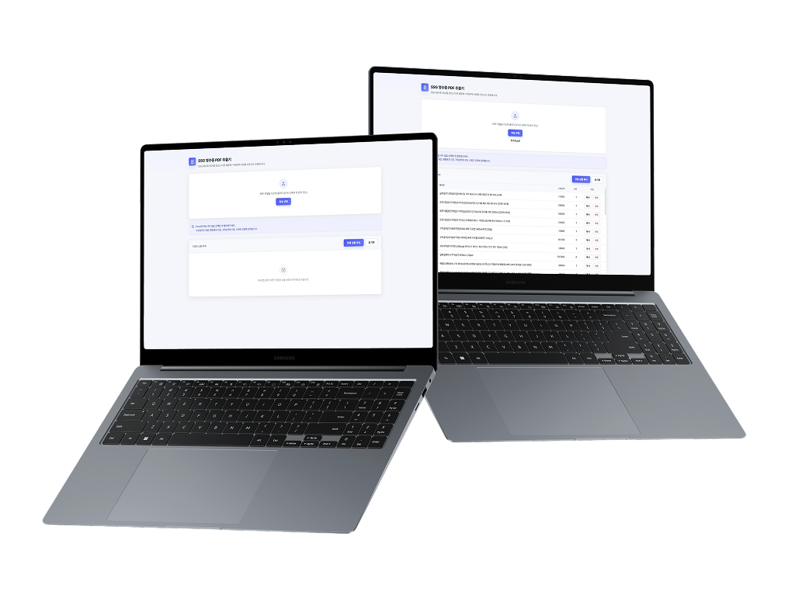

WEB PORTFOLIO PUBLISHER
YOO HYE JI
ABOUT ME
작은 차이를 놓치지 않는
웹 퍼블리셔 유혜지입니다.
저는 디자인에 담긴 의도를 이해하고,
이를 웹페이지로 만드는 과정이 즐겁습니다.
단순히 보이는 화면을 만드는 데 그치지 않고,
간격이나 미세한 움직임까지 신경 쓰며 작업합니다.
새로운 기술은 직접 써 보면서 익히는 편이고,
배운 것은 다음 작업에 바로 적용해 봅니다.
MY WORK STYLE
-
01
이해하기
요구사항과 디자인 의도를 살펴보고,
전체적인 구조와 방향을 정리합니다. -
02
구현하기
막히는 부분은 여러 방법을 찾아 직접 적용해 봅니다.
문제를 하나씩 해결하면서 새로운 것을 배워 나갑니다. -
03
점검하기
작업한 페이지를 다양한 화면 크기에서 확인하고,
피드백을 반영해 부족한 부분을 수정합니다.
MY WORK STYLE
-
01
이해하기
요구사항과 디자인 의도를 살펴보고,
전체적인 구조와 방향을 정리합니다.요구사항과 디자인 의도를 살펴보고 구조와 방향을 먼저 정리합니다.
-
02
구현하기
막히는 부분은 여러 방법을 찾아 직접 적용해 봅니다.
문제를 하나씩 해결하면서 새로운 것을 배워 나갑니다.막히는 부분은 여러 방법을 시도하며 하나씩 해결해 나갑니다.
-
03
점검하기
작업한 페이지를 다양한 화면 크기에서 확인하고,
피드백을 반영해 부족한 부분을 수정합니다.다양한 화면 크기에서 확인하고 피드백을 반영해 수정합니다.
SKILLS
-
01
Publishing
시맨틱 마크업을 기반으로 반응형 웹페이지를 제작하고,
다양한 인터랙션을 구현합니다.반응형 웹 제작과 다양한 인터랙션 구현
-
 HTML5
HTML5
-
 CSS3
CSS3
-
 jQuery
jQuery
-
 JavaScript
JavaScript
-
-
02
Design
디자인 시안을 제작하고, 웹페이지에 필요한
이미지와 그래픽 요소를 편집합니다.디자인 시안 제작과 그래픽 편집
-
 Figma
Figma
-
 Photoshop
Photoshop
-
 Illustrator
Illustrator
-
-
03
Tools
개발 도구를 활용해 코드를 작성하고 프로젝트를 관리하며,
AI 도구를 활용해 작업 효율을 높입니다.프로젝트 관리와 AI 도구 활용
-
 VS Code
VS Code
-
 Git
Git
-
 GitHub
GitHub
-
 Claude Code
Claude Code
-
 Slack
Slack
-

VIEWSITE
TESLA
Main + 4 Sub Pages
흑백 대비와 레드 포인트 컬러로 Tesla의 기술적인 이미지를 표현한 PC 웹사이트 리뉴얼입니다.
OTA 섹션에서는 카드가 차량 이미지로 흡수되는 스크롤 애니메이션을 구현했습니다.
흑백 대비와 레드 포인트 컬러로 Tesla의
기술적인 이미지를 표현한
PC 웹사이트 리뉴얼입니다.
VIEW
Desktop
ROLE
Design · Publishing
TOOLS
HTML · CSS · JavaScript
jQuery · Swiper · AOS
Figma · Claude Code

VIEWSITE
BEI LIGNE
Main Page
미니멀 가구 브랜드의 차분한 분위기를 이미지와 여백 중심으로 풀어낸 반응형 웹사이트 리뉴얼입니다.
스크롤에 반응하는 헤더와 핫스팟 카드 인터랙션을 구현했습니다.
미니멀 가구 브랜드의 차분한 분위기를
이미지와 여백 중심으로 풀어낸
반응형 웹사이트 리뉴얼입니다.
VIEW
Desktop · Tablet · Mobile
ROLE
Design · Publishing
TOOLS
HTML · CSS · JavaScript
jQuery · Swiper · AOS
Figma

VIEWSITE
L’OCCITANE
Main Page
자연 친화적인 브랜드 이미지를 담은 반응형 웹사이트 리뉴얼입니다.
인트로 영상과 제품·원료 비주얼이 돋보이도록 화면을 구성했습니다.
자연 친화적인 브랜드 이미지를 담은
반응형 웹사이트 리뉴얼입니다.
VIEW
Desktop · Tablet · Mobile
ROLE
Design · Publishing
TOOLS
HTML · CSS · JavaScript
jQuery · Swiper · AOS
Figma

VIEWSITE
DRAW MATE
Web Application
방 코드로 입장해 함께 그림을 그리는 실시간 협업 그림판입니다.
Socket.IO를 활용해 펜·텍스트·이미지 작업을 실시간으로 동기화했습니다.
방 코드로 입장해 함께 그림을 그리는
실시간 협업 그림판입니다.
DEVELOPMENT
Vibe Coding
ROLE
Planning · UI Design · AI-assisted Development
TOOLS
HTML · CSS · JavaScript
Node.js · Express · Socket.IO
Claude Code

VIEWSITE
RECEIPT PARSER
Work Utility
업무 중 영수증 내용을 엑셀에 직접 옮기던 불편을 줄이려고 만든 웹 도구입니다.
여러 PDF에서 품목·수량·금액을 추출해 엑셀에 바로 붙여넣을 수 있도록 구현했습니다.
업무 중 영수증 내용을 엑셀에
직접 옮기던 불편을 줄이려고
만든 웹 도구입니다.
STATUS
In Actual Use
DEVELOPMENT
Vibe Coding
ROLE
Planning · AI-assisted Development
TOOLS
HTML · CSS · JavaScript
PDF.js · Claude Code
CONTACT
- EMAIL 2yooh2@naver.com
- PHONE 010-5661-9802